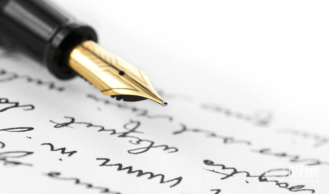

2016，这8支钢笔够你装逼一整年
 苏苏
2016-01-25
苏苏
2016-01-25
钢笔，作为一个书写工具，像手表一样，不但具有功能性，还拥有了装饰（bi）等功能。不过总有人在死
磕钢笔的本质：

选一只钢笔
初次使用钢笔该如何选择，这是个老生常谈的问题了，具体其实没什么好讲的，因为不但那些昂贵的钢
笔，每支都有自己的个性，相对廉价的钢笔更是如此。所以还是要尽量自己去实体店尝试，看看手感是否
适合自己。

其次，因为现代许多人都是一直用圆珠笔和中性笔，所以总想要求钢笔的笔迹也要像中性笔一样细，这也
算是一个误区，钢笔的笔迹一般都不会很细，其实细的笔尖，品控等方面未必能做好。总之粗细问题习惯
就好，毕竟中文字体本来就不太适合很细的笔迹去表现。

再者就是选择的时候，不要觉得金尖的手感就一定比钢尖要好，还是要自己去尝试。还有重量一定要好好
考虑，太重的钢笔虽然有的时候手感很好，但是写久了会很累，适合少量高质的书写。
什么是好钢笔

一支钢笔，笔尖分为明尖和暗尖，一般来说明尖会更为软，而暗尖会比较硬。明尖很容易达到软弹的效
果，而暗尖则比较容易达到硬滑的效果，日常大量书写的话，更推荐暗尖，不过如果是领导签字，自然需
要一款帅气的明尖才行(也不绝对，比如麦克阿瑟使用的派克51，则有一种军人的饱满和刚毅的美感。)
如果说钢笔的灵魂在于笔尖，那么笔尖的灵魂，就在于铱粒了，各厂有各厂不同的铱粒，其组成和打磨都
各不相同。其中最有名的犀飞利（西华）其铱粒的耐磨程度其余各厂望尘莫及。大家挑选钢笔最好也考虑
下自己的风格，比如说有人将铱粒的打磨分为刀锋打磨和普通的胖头尖，其实并不存在孰优孰劣，只是所
谓的刀锋打磨，更容易表现笔画的粗细罢了（相对的书写速度会减慢，磨损也会加快。）各厂不同产地的
的铱粒，也会有不同，比如派克世纪现产的法产笔尖，就没有英产的耐磨。

而笔杆，有树脂，金属（铝，银，钢等）木质（石楠，各种檀木等）赛璐珞，和覆漆笔杆。个人认为树脂
笔杆虽然温润，却没有大漆的那种深邃和纯净感。银杆钢杆等金属笔杆冬天比较冷，但也会使整笔更重，
而且银杆虽然很美，但较难保养。木杆很漂亮，却也有开裂的危险。
上墨器的话，活塞上墨理论上来说容量更大，但无法使用墨胆，在现实生活中还是比较麻烦的，上墨容易
染一手。气压和上墨器上墨没什么太大差距。
笔身的大小同样是很重要的考虑因素，有的人喜欢大笔，有的人喜欢小笔（大笔普遍偏贵就是了）像我就
比较适合使用派克精装世纪（小豆）和百利金m600这个大小的笔。如果手汗比较多，则需要考虑笔握的
情况了。像万宝龙的星际行者，他的笔握防滑性能就很好。
推荐钢笔
Lamy Safari
这是一款已经被很多人推荐甚至听说已经和kindle一起作为文青的标配的笔。但是，还是得推荐一下，如
果没有他这两年这么火，应该也没有现在国内日渐多起来的爱好钢笔的人。(毕竟我也是一支safari一支万
宝龙入的坑）不得不说，这支笔的设计是很不错的，完全没有传统观念中钢笔的那种老式感。细节设计也
很不错，比如他很有趣的螺纹和上墨器。虽然已经烂大街了，不过写感也确实不算差，是100元左右比较
值得购买的一支笔。
三文堂 580
三文堂580 这也是在各种网站很常见的一支笔，示范款式，搭配透明度高的彩墨会非常非常漂亮。写感也
不错，比较硬滑的风格。不过要注意的是整笔比较大，比较重，手小瘦弱的女生可能不太适合这支笔。再
者就是示范钢笔一定要小心不要让它被刮花或者有划痕，小心保管。
英雄（精致）100
英雄100 这就是当年英雄拿来赶超派克51的笔。（非说是100英雄我也没话说）大家普遍的观点是品质逐
年下降，但是根据我手上的来看，我有84年的，96年，98年和现产的英雄100，手感最好的98年的金夹
款,并没有觉得84年的那只金夹就好到哪里去，现产也没见差到哪里去。所以我想大家倒也不必特别担心
这个问题。作为一款暗尖笔，英雄100的手感和外观不得不说是很不错的(特别是金夹)，非常值得买来
日常使用的笔，英雄100的钢帽很漂亮，很惊艳的感觉，特别是搭配上金夹，简直完美。
白金 PTB5000
白金PTB5000 没有特别的名字，却是非常棒的一支笔，笔身纤细，书写顺畅易出锋，拥有白金那种特殊的
手感，阻尼却不像3776那样大。日用很舒服。某宝购买的话，不到300元啦。
玩钢笔也不只是玩钢笔，可能更多的是对一种更优质的生活的追求，想象一下自己工作的地方，都非常精
致，这种感觉也是非常棒的。
上一篇：到底有没有完美的iPhone手机配件，答案都在这里 下一篇：他用12年找一把完美 剃须刀，给你2万字终极购买指南

喜欢 15

分享


全球酷玩试用导购平台酷·新奇·好玩·品质
微信添加"JguoJguo"
获取我们的服务。
免费试用
试用流程
如何提高成功率
友情链接
购买攻略
美亚海淘教程
日亚海淘教程
海淘转运攻略
kickstarter 众筹购买攻略
indiegogo 众筹购买攻略
厂商合作
关于极果
联系我们
商务合作:BD@jiguo.com
CEO邮箱:CEO@jiguo.com